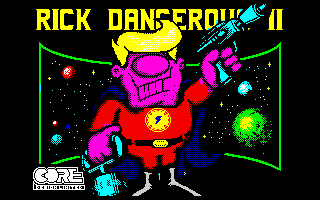
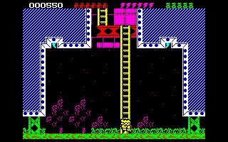
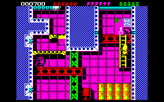
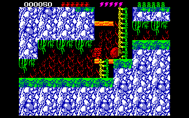
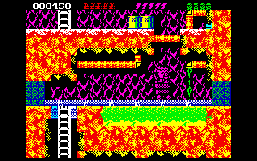

|
 |
Rick Dangerous II has character. From the text neatly plummeting into place
after the title screen to the quiff covering Rick’s eyes, it has life. Robots
abducted straight from those classic TV serials of yester-decade,
mecha-penguins defrosting to give chase and little toxic barrels getting up
and rolling towards you; this game has character coming out of its ears. And
its nose. And almost every other bodily orifice there is.
|
|
The plot picks up rather tenuously from the end of Rick Dangerous I... by
the way, has anyone out there actually finished the first game? Anyone at all?
Oh, do I see a hand at the back? You just want to go to the toilet? Oh, OK.
Anyway, it was a really, really, really difficult in the same way that space,
according to Douglas Adams, is big. It's not just big. And Rick Dangerous I
was not just difficult. It took difficult, put it through a rack, destroyed
the last piece of humanity in its coal-black heart and released it on an
unsuspecting world lighting matches on its stubbly chin and stealing little
girls' lollies. I'm sorry. I had to get that off my chest. Mighty therapeutic
this reviewing lark, you know. Where was I? Oh, yes, the plot. Well. Rick
defeats the evil Fat Man and saves the day. Only the Fat Man didn't die, but,
by the start of Rick Dangerous II has made some friends who are truly, well,
out of this world. Yes, aliens are once again threatening the safety of
humanity so Rick Dangerous, Dashing Hero Type Extraordinaire (DHTE) leaps into
action and sets out to foil their undoubtedly evil plans. Though they may just
be here to remove the cast and crew of Neighbours, or some other good deed.
Come to think of it, what should they be evil? Why does simply turning up on
Earth automatically mean they're here to do something bad? And why wouldn't
life under our new extraterrestrial masters be preferable? And what if...
sorry?... just take the nice people at Microstyle's word for it, you say? Get
on with it, you insist? OK then. Sorry.
|
 |
|
 |
Onto the game itself, then. It scores points right from the start by giving
you the choice of any of the first four levels (there are five in total) to
try. Of course, they get progressively difficult as the number increases, but
at least the choice is there, and it gives you chance to practice before
taking them all on to get to level five. And you'll need lots of practice, let
me assure you. You remember how I said the first game was difficult? Well,
although its illustrious successor is far easier, it still wouldn't be found
in the Oxford Dictionary under 'easy' or even 'not too tricky' or possibly
'quite tricky' once you get to level three. But let's not go there yet: let's
begin at the beginning...
|
 |
Ah yes, the game's character. It has such charm, such sophistication... does
anyone remember the advertising campaign Microstyle ran when Rick Dangerous II
was first released? The funky cartoon mini-serial in the computer magazines?
The charm doesn't stop with the cartoon's cool 40s style heroics, my friends.
The style is there from the start, even as early as the “select control
method” bit, which, if you know which method and which level you want, can
also be skipped. So, let's try level one, shall we? Within the first five
seconds you've rushed under lasery death, bumped off a cool 50s robot and
climbed a ladder to penetrate the mother ship in Hyde Park, again neatly
dodging gun turrets trying to get you (or dying, but there we go). Rick's a
nimble little fellow as within the first minute he has (hopefully) hit a few
switches, crawled under electric death and laser guns, shot a few robots,
leapt around a fair bit, detonated a couple of explodable walls and hauled
himself up some piping. It's like being Flash Gordon or Buck Rogers... only
with a rather impossibly-sized hair-do. It's exceptionally cool. And there's
variety, too: best the mother ship and icy wastes beg exploration, complete
with snowballs, ice cubes, mecha-penguins, ice, even a hover-bike thing;
there's also level three with its foresty delights and the tribulations of a
toxic-mine thing, complete with barrels, mutants, moles and mine carts. It's a
game with ideas bursting out all over the place, realised with character,
charisma and charm. Even the gun-toting, exploding stuff is never gratuitous
because you have a strictly limited arsenal adding to the game's already
strong arcade-strategy element. Each level is a carefully-constructed series
of set-pieces, each of which need tacking in a certain, but never that
illogical, way. Maybe they're a bit long, but there's enough to keep you on
your toes until you finally get to the end... and how satisfying when you do.
|
|
And this is where the problems lie... there's so much to keep you on your
toes that you'll be walking on pointe. When you load it up you may think that
the six lives waiting in the top right of the screen are excessively generous,
but you can get through them in a matter of seconds if you're not really
careful - and on your first few goes you probably will. Hesitate, and you're
dead. Miss a jump and you are, quite likely, dead. Fail to notice the gun
turret in the wall as you enter a new screen and walk towards the barrels and
you're dead: you needed to crawl as that gun's about to go off. Could you have
known? Maybe. Is it fair? Kind of. Are the restart points much more plentiful
as a result? Not exactly. Is it butt-clenchingly unfair every step of the way,
throwing you into situation after situation you cannot possibly survive? Not
really: you just have to get used to how the designers thought. It takes a
while, but you'll soon be leaping over forcefields, crawling under laser beams
before they go off, dispatching enemies and doing your funky Buck Rogers/Flash
Gordon thing until the level finally bites the dust. And hey, as you can save
with these emulator things, it makes it all that much more possible.
|
 |
|
 |
On an aesthetic note, the graphics are clear and colourful most of the time,
though things do get a bit more confusing on the forest level, the opening
music is groovy and the sound FX atmospheric. The controls are lovely and
responsive, and hey, if you give the game a little while and keep one of those
squidgy corporate stress balls handy, you may even have fun. One thing that’s
for sure is that when do you get into Rick's world of adventure and danger,
you'll find yourself getting up at 6am to see the BBC's repeats of 1940’s
Flash Gordon.
|